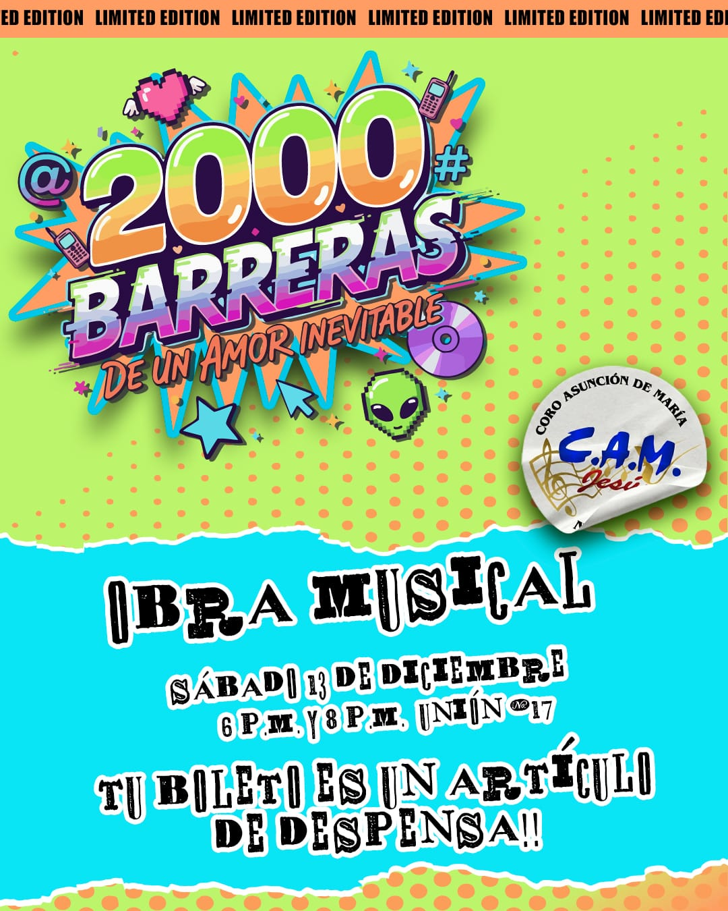

Parroquia Asunción de María
Industrial, Gustavo A. Madero, Ciudad de México
Industrial, Gustavo A. Madero, Ciudad de México
El Coro Asunción de María se prepara para realizar como cada año su presentación con causa, que este año realizará una obra teatral musical.
Esta obra musical está ambientada en los años 2000, una época en la que el pop y el rock en español vivían su máximo esplendor con bandas como Belanova, Reik, Camila, Shakira, Sandoval, entre muchas otras. Un tiempo donde convivían con fuerza las distintas tribus urbanas: punketos, skatos, fresas, emos y más.
En medio de este ambiente nace la historia de dos jóvenes que asisten a un retiro organizado por su comunidad parroquial. Ahí, entre situaciones inesperadas y desafíos personales, surge un romance que parece imposible de detener.
Descubre el destino de este amor inevitable, marcado por la esencia inolvidable de los 2000.
No. Tu entrada consiste en llevar un artículo de despensa no perecedero, como un kilo de arroz, frijol, aceite, comida enlatada o productos de limpieza.
Toda la despensa recolectada será entregada a familias o instituciones que realmente lo necesiten.
Si deseas más información, puedes ponerte en contacto con el Coro Asunción de María.
Disfrutar un momento agradable en familia, compartir risas y, al mismo tiempo, apoyar a nuestros hermanos más necesitados mediante la donación de artículos de despensa, para que también ellos puedan tener una cena navideña digna y llena de esperanza.
Se realizará el día sábado 13 de diciembre con una doble función a las 6 de la tarde y a las 8 de la noche en el auditorio del Centro Parroquial ubicado en la calle de Unión número 17 en la colonia Industrial.
